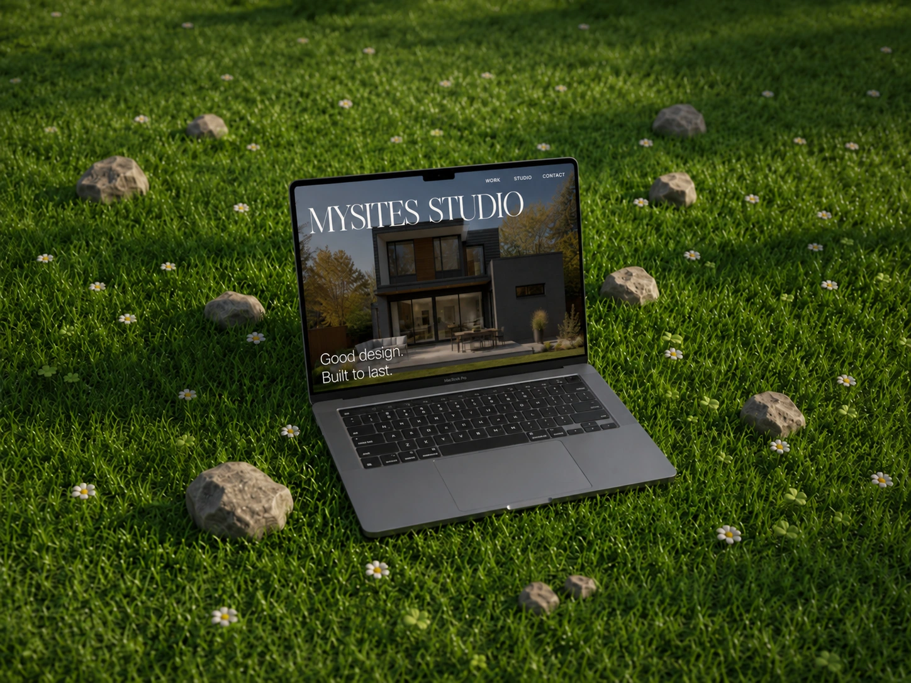

MySites Studio / Design concept
Independent designGood design. Built to last.
by MySites — 2026

A different direction.
The same attention to detail.
An architecture studio concept that brings considered spaces into a natural, image-led digital setting.
Have something in mind?
Start your website brief ↗